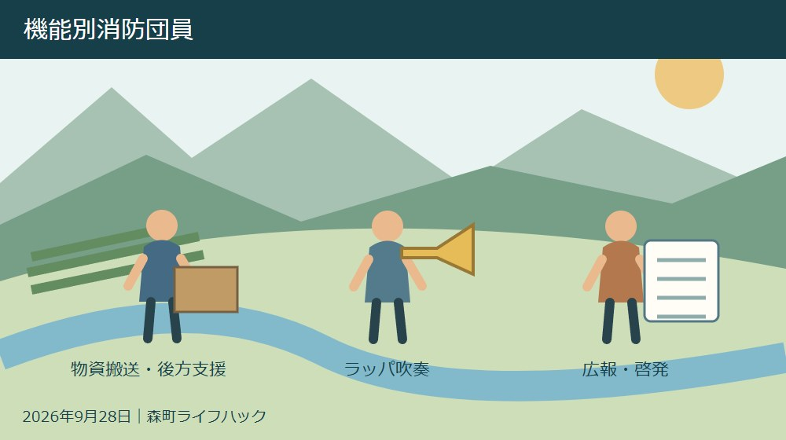
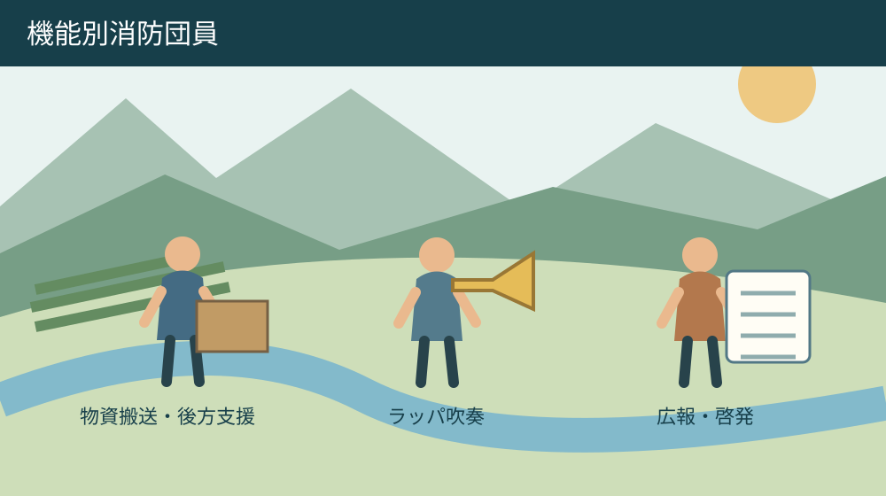
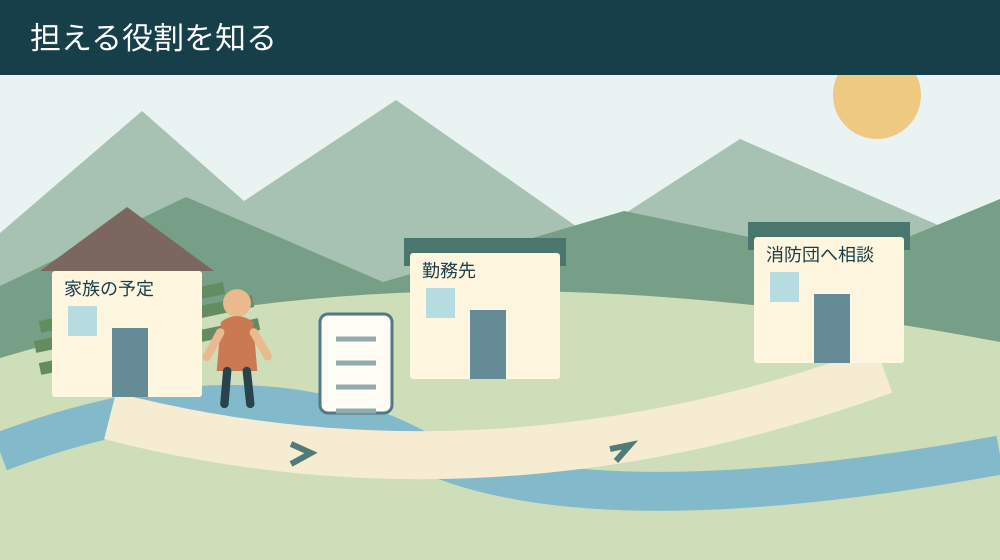

手続き・相談・家族の段取り
森町の機能別消防団員｜3班の役割と応募条件

Q. 仕事と家庭があっても、消防団に関わる方法はある？
A. 森町は役割を限定して活動する機能別消防団員を募集しています。分団サポート班は退団者、ラッパ班と広報班は退団者または町内在住・在勤者が対象。共通条件は満18～60歳の健康な人です。受付は2027年2月26日まで。今日は家族と参加可能な時間を書き、班ごとの活動条件を町へ確認してください。
防災に関わる人と家族の時間から考える
森町の消防団を支えるのは、出動する団員だけではありません。仕事の調整をする勤務先、留守を引き受ける家族、地域で連絡をつなぐ人にも負担があります。担い手を増やす話をするとき、まず既に時間を差し出している人たちの生活を数えたいと思います。
2026年9月17日から、森町では機能別消防団員の応募受付が始まりました。町の説明は、団員の減少に対応して消防力を維持するため、役割を限定して活動する機能別分団員を募集するというものです。何でも引き受けるか、全く関わらないかの二択ではありません。
私は大石浩之（磐田市／不動産業）です。森町の防災を外から論じるより、応募を考える人が自分の仕事と家庭に照らして読めるよう、三つの班の違いを整理します。入団を勧める前に、応募条件と活動内容を分けて確認する記事です。
担い手不足という課題に対して、今日できる一歩は家族と参加可能な時間を書き出すことです。応募届を完成させる日でなくても構いません。出られる曜日、難しい時間、事前調整が必要な予定を言葉にしてから、町へ活動の実際を聞けます。
機能別消防団員の対象と受付期間
森町の「機能別消防団員の募集について」を2026年9月28日に確認しました。対象は満18歳から60歳までの健康な人で、森町消防団の退団者、または森町に在住・在勤の人です。ただし全ての班で同じ対象条件になるわけではありません。
応募受付期間は2026年9月17日から2027年2月26日までです。9月28日はこの期間内にあります。町本文の更新日は9月17日ですが、初回公表日の表示と現在の応募人数は確認できません。募集開始日と記事の更新日を同じ意味では扱いません。
町は複数の班への所属も可能としています。意外に感じるかもしれませんが、一つだけしか選べない募集ではありません。ただし複数所属が可能なことと、活動時間を無理なく確保できることは別です。まず一つの役割を詳しく聞く方法もあります。
健康状態に不安がある場合や、応募時と活動開始時で年齢が変わる場合は、条件の扱いを町へ確認します。本記事は個別の入団可否を判断しません。「健康な方」という短い表現を、家族の推測だけで当てはめないようにしたいところです。
3班の役割は後方支援・ラッパ・広報
分団サポート班の募集予定人数は28人で、対象は森町消防団退団者です。災害時の避難・交通誘導などの後方支援、物資搬送、分団活動の支援を担います。森町在住であれば誰でもこの班へ応募できる、という説明ではありません。
ラッパ班は8人を予定し、式典等でのラッパ吹奏や広報活動を担います。対象は退団者、または森町に在住・在勤の人です。募集本文に役割があるからといって、未経験者の練習内容や経験条件まで確定したわけではありません。応募前に本人の経験を伝えて確認します。
広報班は5人を予定し、消防団の広報活動、火災予防の啓発活動、地域交流等を担います。対象はラッパ班と同じです。撮影や文章を書く仕事だけと決め付けず、対面の交流や活動場所も含め、どのような参加を想定しているか聞く必要があります。
三つの予定人数を合計すると41人ですが、これは応募済みの人数でも、残っている枠の数でもありません。28・8・5という数字は募集計画として読みます。空き人数を確認せず、「まだ余裕がある」「もう締切間近」といった推測はしません。
役割を限定する仕組みは、仕事や家庭と両立する入口になります。ただし「限定」という言葉だけで、負担が軽い、危険がない、都合のよい日だけ参加できると判断するのは避けます。実際の出動や訓練の条件は、選ぶ班を示して聞く事項です。

| 班 | 人数 | 対象 |
|---|---|---|
| 分団サポート | 28人 | 森町消防団退団者 |
| ラッパ | 8人 | 退団者または町内在住・在勤 |
| 広報 | 5人 | 退団者または町内在住・在勤 |
報酬は時間の見通しと一緒に読む
森町の募集案内では、年額報酬は18,000円、災害出動は4時間4,000円、訓練出動は1回2,000円とされています。公務災害補償があり、活動服や法被、安全靴等の貸与も案内されています。金額だけで参加の負担を比較するのは難しい制度です。
私は、年額報酬があることと、仕事を休んだ損失や送迎の調整が全部埋まることを分けて考えます。報酬を軽く見るのではなく、何に対する支払いかを確かめたいからです。必要な装備や自分で準備するものがあるかも、応募時に聞いておくと判断しやすくなります。
災害出動の「4時間4,000円」を単純に時給へ換算し、全ての活動時間に当てはめる説明はしません。短時間や長時間の扱い、移動や準備の扱いは、募集本文の数字だけで判断できません。勤務先へ説明する場合も、確認した条件だけを伝えます。
補償があるという案内は、活動中の安心を考える材料になります。一方で、補償の対象範囲や手続きを自分で推測してはいけません。地域の一般活動と混同しないため、活動保険と行事用保険の違いの記事も参考にし、消防団の活動は町の説明で確かめます。
家族と仕事に重なる時間を書き出す
機能別消防団員への参加を考える際は、活動そのものに加えて、家を出て戻るまでの時間を見ます。森町内のどの地区から、どの集合場所へ向かうかで準備は変わります。本記事では集合場所や移動時間を確認していないため、町全域で同じ所要時間とは書きません。
家族の予定表には、通常の勤務、子どもの送迎、親の通院、家業の繁忙時間を先に置く方法を提案します。その後に参加を考えられる時間を重ねます。地域活動を予定表の先頭に置き、残りを家族に引き受けてもらう順番にはしたくありません。
災害の発生時刻は選べません。平常時の式典や啓発活動と、突発的な連絡に応じる活動では調整方法が違います。「平日の夜なら可能」「休日でも前もって分かれば可能」など条件付きで書くと、単に参加できる・できないの二択より相談しやすくなります。
家族には留守番を頼めるかだけでなく、連絡が取れない間に困ることがないかを聞きます。家の鍵、送迎、介護、服薬の声かけなど、普段は一人が担う作業があれば整理します。家族の支援を当然の前提にせず、難しい条件も応募前の情報にします。
勤務先に対しては、通常勤務への影響が未確認のまま「影響はありません」と説明しないようにします。町には企業協力依頼送付申請書もあります。希望する人へ協力依頼書を送付する仕組みですが、勤務上の取扱いが自動的に決まる制度とは読みません。
良い点は経験と役割を分けて参加を考えられること
森町の募集の良い点は、退団者の経験を生かす後方支援と、ラッパ・広報という異なる入口が見えることです。全ての人に同じ仕事を求めず、役割ごとに応募条件と活動内容が並んでいます。家族へ説明するときも、所属名だけでなく担う仕事を伝えられます。
私は、ラッパや火災予防の啓発を消防力の維持につながる役割として示している点を評価します。災害時の現場活動だけを防災への関わり方と考えると、自分には無理だと入口を閉じてしまう人もいるはずです。役割が見えることで、確認したい内容を具体化できます。
報酬、補償、貸与品、提出書類が同じ募集ページにある点も準備に役立ちます。応募する本人が家族や勤務先へ説明するとき、聞いた話だけでなく公式ページを示せるからです。資料の更新があれば、家族で見ている内容も合わせて確認できます。
今は入団を決められなくても、防災を学ぶ別の入口はあります。森町公式は令和8年度救命講習の案内と日程へのリンクを掲載しています。救命講習の準備記事で確認の順を読み、受講条件と日程は公式案内で確かめてください。受講と入団は別です。
注文したい点は参加後の予定を想像できる情報
機能別消防団員の募集本文だけでは、各班の活動頻度、集合時刻、練習の進め方までは確定できません。私は、役割の説明と一緒に、仕事や家庭と調整するための予定例が分かると助かると考えます。入団を増やすことだけでなく、続けられる条件を見たいからです。
役割を限定する工夫を評価した上で、参加できない日があるときの連絡方法も知りたいところです。無理をして入団し、後から家庭との調整がつかなくなると、本人にも団にも負担が残ります。できない条件を先に話せることは、参加意欲の低さとは別の問題です。
私には、どの班が一人ひとりに合うか、本文の募集要項だけでは決められません。経験を生かせる仕事がよいのか、新しく学ぶ役割がよいのかも本人次第です。迷いを解くには「自分なら何を担うか」と「いつ動けるか」を別々に聞く必要があります。
地域への善意だけで担い手を回す方法には限界があります。だから私は、今日の家族の話合いで「参加できる時間」だけでなく「引き受けられない時間」も一つ書くことを勧めます。町への質問が具体的になり、家族の負担を見えないまま増やすことを防げます。

対案・結論：応募前の電話で五つを聞く
森町の機能別消防団員を検討する今日の行動は、家族と参加可能な時間を書き出すことです。その一枚を手元に置き、危機管理課危機管理係の0538-85-6302へ、希望する班と応募条件を確認します。家族と決めた条件を伝えることで、具体的な話ができます。
電話では、活動日程の決まり方、集合場所、事前の訓練、参加できない場合の連絡、勤務先へ説明する内容を聞く方法を提案します。五つは町の必須質問ではありません。仕事や家庭との両立を考えるための、読者側の確認項目です。
森町への提出書類は、入団届、年額報酬等振込先依頼書、個人番号提供書です。危機管理課へ持参または郵送します。提出先は〒437-0293、静岡県周智郡森町森2101-1、森町役場危機管理課消防団事務局あてと案内されています。
町は個人番号提供書を手書きとし、提出前の確認事項も掲載しています。個人番号や口座情報が含まれるため、家族で共有する予定表と提出書類は別に扱います。書き方や添付資料が不明なら、公式の確認事項を読んでから担当へ質問します。
勤務先への協力依頼書を希望する場合は、企業協力依頼送付申請書を確認します。募集本文には入団後の5月頃に送付する案内があります。応募直後に自動送付されると思わず、勤務先と相談したい時期を担当へ伝えて、段取りを確かめてください。
家族に残すのは役割と連絡の約束
機能別消防団員への参加について家族に残す記録は、希望班、活動内容、問い合わせ日、回答、次に確認する事項です。家族が持つ予定表には個人番号や振込口座を載せません。応募の事務と暮らしの調整は、必要な情報の種類が異なります。
活動の日に家を出る人、家で連絡を受ける人、予定が変わった場合の相談相手を決めます。自宅で誰かの見守りが必要なら、代わりの人が引き受けられるかをその都度確認します。役割を一度決めたから永久に同じ人が担う、という扱いにはしません。
森町の実家を管理しながら活動する人は、巡回や修繕、鍵の管理とも予定が重なるかもしれません。これは全ての団員に当てはまる事実ではなく、家族の条件として考える例です。防災への参加を理由に家の管理が一人へ偏らないよう、既存の担当も見直します。
窓口へ伝える事項の整理に迷う場合は、困りごとを一枚にまとめる記事の方法も使えます。ただし機能別消防団員の応募相談先は危機管理課です。メモの作り方を借りることと、相談窓口を同じにすることは分けてください。
大石の視点：続けられる負担を本人の言葉にする
私は、防災を支える人を増やすなら、入団する前に負担を言葉にできることが必要だと考えます。できる仕事を探すことと、できない予定を認めることは両立します。善意を試すような参加の勧め方では、本人も家族も長く続けにくいからです。
私なら家族との机に、募集の三つの班を書いた紙と、一週間の予定表を並べます。これは経験談ではなく、私の考える相談の場面です。「広報ならできそう」の次に「その時間は誰が家を支えるか」を聞く。役割の魅力だけで決めない、その順番を大切にします。
森町の担い手を外から増やせと言うのは簡単です。私は、既に支えている人の仕事や家庭の時間まで数えて、参加の条件を確かめる側に立ちたいと思います。役割を限定した募集を生かすには、応募する人も自分の限界を説明できる方がよいと考えます。
3班の役割と応募条件を確認し、参加可能な時間を家族と一つ書き出す。9月28日にできる行動はそこまででも十分です。応募する場合は受付期限を確認し、活動頻度や移動、仕事との調整が分からないまま書類だけを提出しないようにします。
よくある質問
森町の機能別消防団員について、応募前に確認したい質問をまとめます。2026年9月28日時点の募集本文に基づく案内であり、個別の入団判断や班ごとの運用は危機管理課へ確認してください。
消防団の経験がなくても応募できますか？
町の募集では、ラッパ班と広報班は森町消防団退団者、または森町に在住・在勤の人を対象としています。共通の年齢条件は満18～60歳で、健康な人です。分団サポート班は退団者が対象です。未経験の場合の練習や活動条件は本文だけでは確定できないため、希望する班を示して町へ確認してください。
複数の班に入ることはできますか？
森町公式の募集案内には、複数所属も可能とあります。ただし活動日程の重なりや参加できない場合の扱いまでは、募集本文から確定できません。仕事、通院の付き添い、子どもの送迎等の予定を書き、各班の活動頻度と調整方法を町へ確認してください。最初から複数所属を選ぶ必要はありません。
いつまでに、どこへ申し込めばよいですか？
受付期間は2026年9月17日～2027年2月26日です。入団届、年額報酬等振込先依頼書、個人番号提供書を森町役場危機管理課へ持参または郵送します。個人番号提供書は手書きの案内があります。公式の確認事項と提出書類を照合し、勤務先への協力依頼が必要な場合は別の申請書も確認してください。
公式情報源
2026年9月28日確認。制度・金額・日程は変更される場合があります。個別の適用は担当窓口へ、融資や医療などの専門判断は各専門機関へ確認してください。